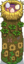
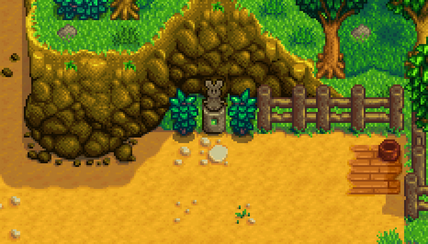
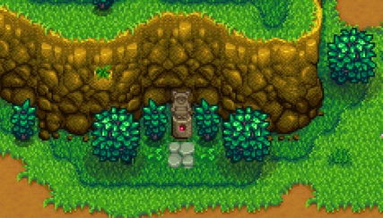
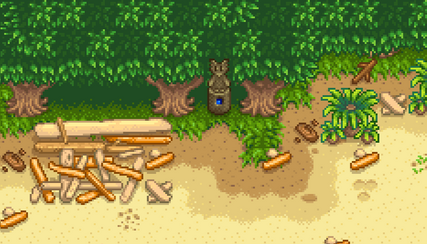
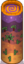
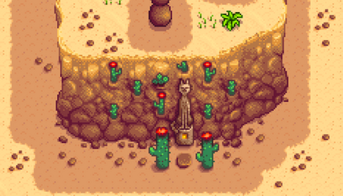
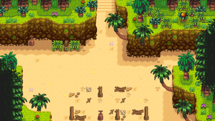

Warp Totem
Warp Totems are items that can be used as instant transport to different areas on the map. They can be crafted, earned, or purchased at the Casino, and are used to quickly travel to different parts of the Valley. Crafting recipes come from leveling up Foraging skill or purchasing at various vendors. To use a Warp Totem, select it in inventory and "use" it (right-click).
Later in the game there are permanent teleporters available which replace consumable Warp Totems. They function much the same way, but are not consumed on use.
There are five locations that standard Warp Totems will teleport players to: The Farm, The Mountain, The Beach, The Desert, and Ginger Island.
Note that on the day of the Luau and Dance of the Moonlight Jellies, the Warp Totem: Beach will be consumed upon use, but will not transport the player to the Beach outside of festival time. During festival time, the totem will be consumed, and will transport the player to the festival, as if they had entered the beach via the bridge from Pelican Town.
Farm
 Warp Totem: Farm warps you directly to the farm warp statue. It is consumed on use.
Warp Totem: Farm warps you directly to the farm warp statue. It is consumed on use. Return Scepter warps you directly to the farm house. For farmhands in a multiplayer game, it warps you directly to your cabin. It is not consumed on use.
Return Scepter warps you directly to the farm house. For farmhands in a multiplayer game, it warps you directly to your cabin. It is not consumed on use.
Farm Obelisk warps you directly to the farm warp statue. It's an unlockable building on the Ginger Island farm, and is not consumed on use. Mini-Obelisks transport you between two places on the Farm. They are not consumed on use.
Mini-Obelisks transport you between two places on the Farm. They are not consumed on use.
 |
 |
Mountains
 Warp Totem: Mountains warps you directly to The Mountain. It is consumed on use.
Warp Totem: Mountains warps you directly to The Mountain. It is consumed on use. Earth Obelisk warps you directly to The Mountain. It's a placeable building on the farm, and is not consumed on use.
Earth Obelisk warps you directly to The Mountain. It's a placeable building on the farm, and is not consumed on use.
|
 |
Beach
 Warp Totem: Beach warps you directly to The Beach. It is consumed on use.
Warp Totem: Beach warps you directly to The Beach. It is consumed on use.- Water Obelisk warps you directly to the The Beach. It's a placeable building on the farm, and is not consumed on use.
|
 |
Desert
 Warp Totem: Desert warps you directly to The Desert. It is consumed on use.
Warp Totem: Desert warps you directly to The Desert. It is consumed on use.
Desert Obelisk warps you directly to the The Desert. It's a placeable building on the farm, and is not consumed on use.
|
 |
Ginger Island
 Warp Totem: Island warps you directly to Ginger Island. It is consumed on use.
Warp Totem: Island warps you directly to Ginger Island. It is consumed on use. Island Obelisk warps you directly to the Ginger Island. It's a placeable building on the farm, and is not consumed on use.
Island Obelisk warps you directly to the Ginger Island. It's a placeable building on the farm, and is not consumed on use.
 |
 |
History
- 1.0: Introduced.
- 1.1: Added permanent teleporters (Return Scepter, Earth Obelisk, Water Obelisk).
- 1.4: Added desert teleporters (Warp Totem: Desert, Desert Obelisk).
- 1.5: Added island teleporters (Warp Totem: Island, Island Obelisk). Added Mini-Obelisk.